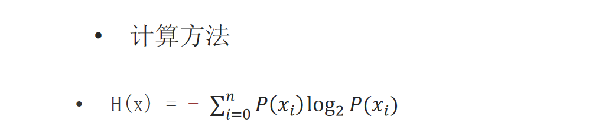
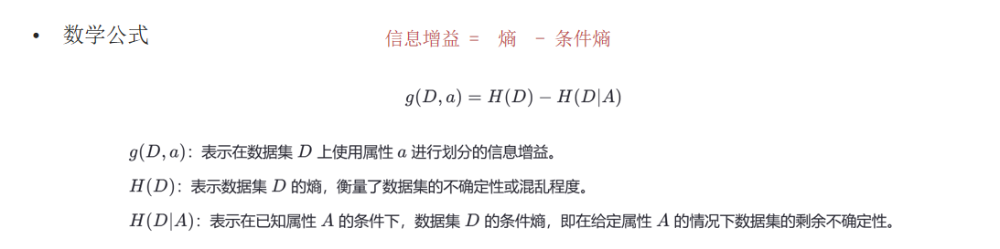
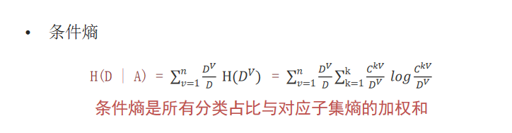
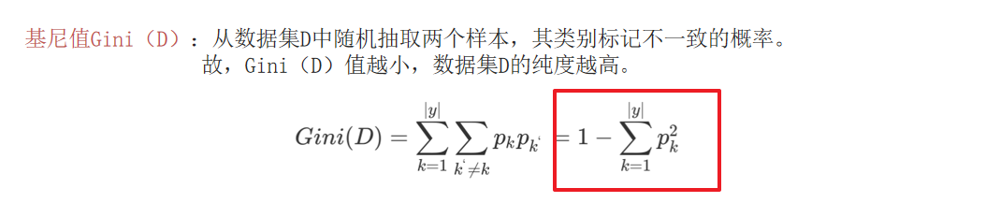
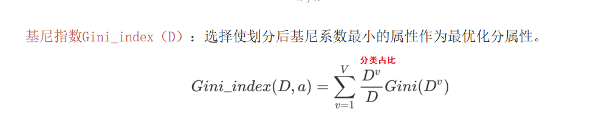
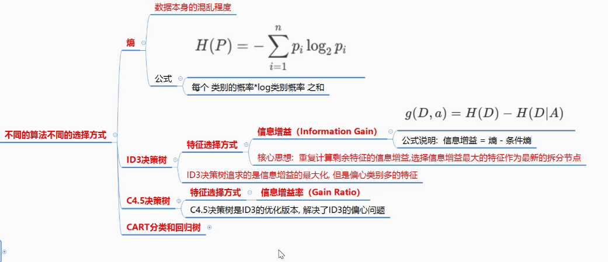
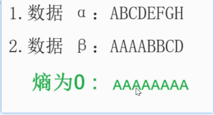
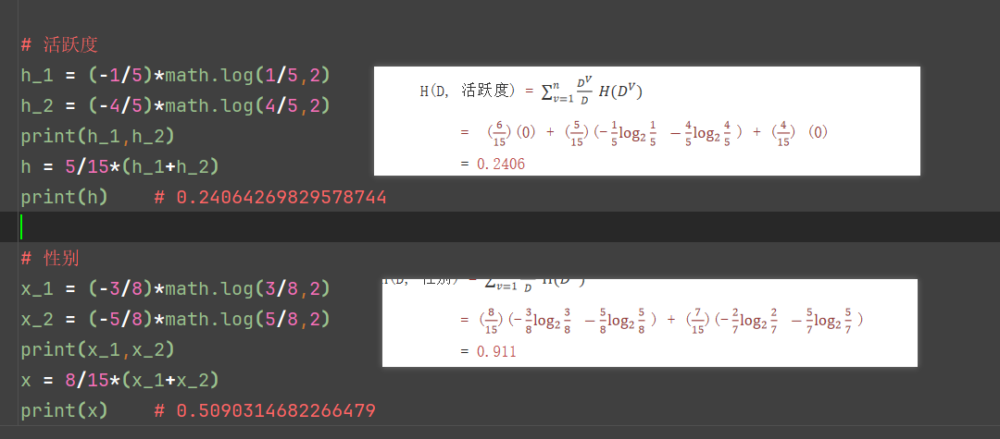

机器学习–决策树
集成学习 –> bagging思想 –> 随机森林 –> 决策树
一、决策树
1. 决策树的形成流程
- 特征选择
- 特征判断
- 生成决策树
- 决策树剪枝
1.1 特征选择
- ==选择有较强分类能力的特征==
- 不同的算法有不同的特征选择：
- ID3决策树：==信息增益==（Information Gain）
- C4.5决策树：==信息增益率==（Gain Ratio）
- CART 决策树：
- 分类问题：==基尼指数（不纯度）==（Gini Impurity）
- 回归问题：最小平方误差 MSE，最小绝对误差 MAE
1.2 特征判断
- ==根据特征判断形成分支==
1.3 生成决策树
- ==每次树的判断都是树的生成过程==
1.4 决策树剪枝
- 预剪枝
- 后剪枝
2. 不同的算法使用不同的特征选择
1 信息熵：==信息本身的混乱程度==
概念
- （Information Entropy）是1948年由克劳德·香农提出，用于**==量化系统的不确定性或信息量==。在机器学习中，熵常用于决策树（ID3、C4.5和CART都利用了熵来选择最佳属性进行数据分割**）的特征选择，决策树通过分裂降低数据熵，提升分类纯度。
- 熵增:有序(确定性)→无序(不确定性),模型学习难度越大
- 熵减:混乱→有序（信息处理）,模型学习的核心目标
熵的公式：每个 类别的概率*log类别概率 之和

2 信息增益
概念
- （Information Gain, IG）是决策树算法中用于选择最佳分裂属性的一种度量方式。
信息熵计算公式：
- ==信息增益 = 熵 - 条件熵==

- 条件熵：

3. ID3 决策树
- 特征选择方式：信息增益（Information Gain）
- 核心思想：
- 重复计算剩余特征的信息增益，选择信息增益最大的特征作为拆分节点
- ID3决策树追求的是信息增益最大化，但是偏心与分类较多的特征
- 特点：
- ID3只能对离散属性的数据集构成决策树
- 倾向于选择取值较多的属性
4. C4.5 决策树
- 特征选择方式：信息增益率（Gain Ratio）
- ==计算公式：信息增益率 = 信息增益 / 特征熵==
- 实际上信息增益率就是在信息增益的基础上增加了惩罚 **==1/特征熵==*
- C4.5决策树是ID3的优化版本，解决了ID3 的偏心问题，追求信息增益率的最大化
- 特征熵计算公式：
- 特征熵：
- 类别的占比 与 log2类别的占比 的乘积 的和
- 类别越多特征熵越大，反之 1/特征熵 就越小，从而降低了信息增益率（相当于给信息增益乘上了一个惩罚系数）
- 特征熵：
- 特点：
- 缓解了ID3分支过程中总喜欢偏向选择值较多的属性
- 可处理连续数值型属性，也增加了对缺失值的处理方法
- 只适合于能够驻留于内存的数据集,大数据集无能为力
5. CART（Classification And Regression Tree 分类和回归树） 决策树（二叉树）
特征选择：
- 分类任务：基尼指数
- 回归任务：最小平方误差（MSE）最小绝对误差（MAE）
==基尼值：==

- 基尼指数：


扩展：

面试题知识点串联:
1. 什么是决策树，决策树的作用是什么，应用场景？
答：
什么是决策树？
决策树是一种树形结构的机器学习模型，用于做分类任务和回归任务的预测，其结构类似于流程图，==树中每个内部节点表示一个特征上的判断，每个分支代表一个判断结果的输出，每个叶子节点代表一种分类结果。==
决策树的作用：
- 生成决策树；
- 解决分类和回归问题。
应用场景：
- 医疗诊断（疾病预测）
- 金融风控（贷款审批）
- 客户细分（市场营销）
2. 决策树的流程？
答：
- 特征选择；
- 特征判断；
- 生成决策树；
- 决策树剪枝。
3. 决策树的分类以及对应的特征选择？
答：
决策树的分类及对应特征选择：
ID3 决策树：信息增益；
C4.5 决策树：信息增益率；
CART 决策树：
① 分类任务：基尼指数；
② 回归任务：最小平方误差MSE，最小绝对误差MAE。
4. ID3决策树的优缺点是什么，为什么？
答：
优点：
- 直观易懂；
- 计算效率高；
- 适用于离散特征；
- 能够处理多分类问题；
- 对部分噪声有容忍度。
缺点：
- 偏向于分类多的特征；
- 无法处理连续特征；
- 对缺失值敏感；
- 容易过拟合；
- 贪心算法的局限性；
- 无剪枝机制。
为什么会出现偏向于分类多的特征的情况？
这是由ID3 底层 用到 的 信息增益 公式决定的：涉及到了分类占比， 对于分类多的特征 就会出现多个分类占比，从而使得条件熵变小，信息增益=熵-条件熵 ，这会使得信息增益变大，而信息增益追求的就是最大，所以他会偏向于分类多的特征列。
5. 如何解决ID3决策树的缺点？
答：
如何解决？
使用 C4.5决策树。
6. 什么是信息增益率？
答：
信息增益率 = 信息增益 / 特征熵
特征熵是 分类占比*log以2为底 分类占比做对数 的和
信息增益率 是C4.5决策树的特征选择，解决了ID3决策树的 偏向于分类多的特征 的缺陷
信息增益率的作用：
==对信息增益的改进和修正（优化），主要解决信息增益在选择特征时的 偏向性问题==；
信息增益率的本质：
特征的信息增益 ➗ 特征的内在信息
相当于对信息增益进行修正，增加一个惩罚系数
特征取值个数较多时，惩罚系数较小；特征取值个数较少时，惩罚系数较大。
惩罚系数：数据集D以特征a作为随机变量的熵的倒数。
7. 基尼值和基尼指数的计算？
答：
基尼指数是CART决策树做分类任务时的特征选择
基尼值的计算公式是：特征中各个分类 1-概率的平方的和（Σ）
基尼指数：基尼值*分类占比 的和（Σ）
8. 三种决策树的对比？
一、算法概览对比
| 特征 | ID3 | C4.5 | CART |
|---|---|---|---|
| 提出者 | Ross Quinlan (1986) | Ross Quinlan (1993) | Leo Breiman (1984) |
| 中文名称 | 迭代二叉树3代 | 分类树算法4.5代 | 分类与回归树 |
| 分裂标准 | 信息增益 | 信息增益率 | 基尼系数（分类）/ 均方误差（回归） |
| 树结构 | 多叉树 | 多叉树 | 二叉树 |
| 处理任务 | 只支持分类 | 主要分类，可处理回归 | 分类 + 回归 |
| 特征类型 | 离散特征 | 离散 + 连续 | 离散 + 连续 |
| 剪枝方式 | 无内置剪枝 | 悲观剪枝 | 代价复杂度剪枝 |
| 缺失值处理 | 不支持 | 支持 | 支持 |
| 主流程度 | 历史算法，较少使用 | 学术界常用，有专利 | 工业界最常用 |
9. 决策树的API及绘图？
答：
决策树的API：sklearn.tree.DecisionTreeClassifier
绘图API：sklearn.tree.plot_tree
数学计算方法
1 | # 导包 |
